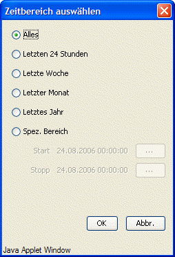

klicken. Geben Sie in dem nun angezeigten
Dialogfeld die gewünschten Daten ein.
klicken. Geben Sie in dem nun angezeigten
Dialogfeld die gewünschten Daten ein.Wenn Daten eines Sensors einer DDC-Station auf dem PC aufgezeichnet worden sind, dann kann die 963 diese Daten grafisch darstellen:
So stellen Sie aufgezeichnete Werte grafisch dar:
1 Rufen Sie entweder eine Trendkurve mit kompaktem Datenformat oder eine Trendkurve mit präzisem Datenformat für den wiederzugebenden Datenpunkt auf, wie im entsprechenden Abschnitt dieser Anleitung beschrieben..
2 Klicken Sie im Menü Daten auf Aufgezeichnete Daten laden. Das Dialogfeld Zeitbereich auswählen wird angezeigt.

3 Klicken Sie die gewünschte Option an,
um den Zeitbereich für die wiederzugebenden Daten zu definieren. Um einen
bestimmten Zeitbereich anzugeben, wählen Sie Speziell
und geben dann das Anfangs- und das Enddatum des Bereichs ein, indem Sie
neben den Feldern Start und Stop auf klicken. Geben Sie in dem nun angezeigten
Dialogfeld die gewünschten Daten ein.
4 Klicken Sie auf OK. Die Trendkurve wird nun angezeigt.
Mit der Zoomfunktion einer Trendkurve können Sie die Daten deutlicher darstellen. Die Trendkurvendaten können als eine Werteliste dargestellt werden.
Beachten Sie, dass diese Funktion nur verfügbar ist, wenn man auf den 963 Server im Grafikmodus zugreift.